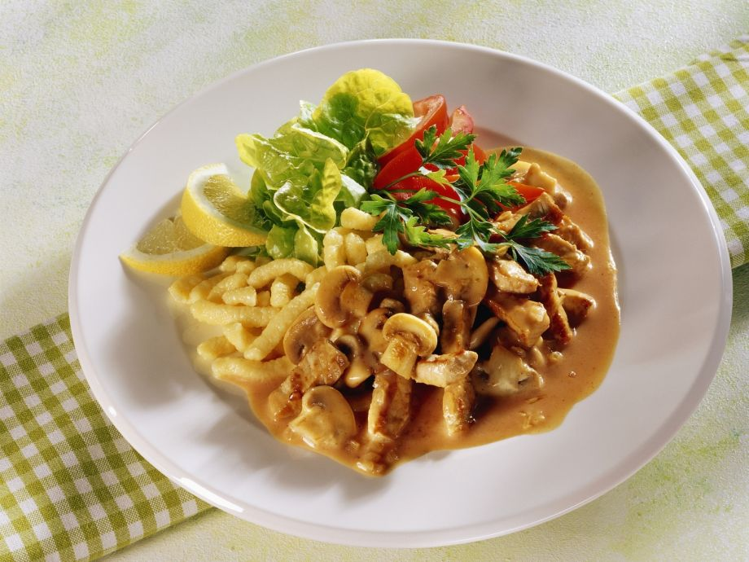

Zurich-Style Meat Saute

Description
Originally called “Züri Gschnätzlets” (Zurich chopped) from the city of Zurich in Switzerland, this is a tasty and practical recipe from simple ingredients. You can use any kind of meat really, depending on your taste. Very traditionally, finely sliced liver and kidney is also mixed in with the meat and mushrooms.
Ingredients
- 600g Beef, finely sliced
- 250g Mushrooms, finely sliced
- 1 Onion
- 1 tbsp Flour
- 200ml White whine
- 200ml Cream
- 1 tbsp chopped parsley
Steps
- Fry the meat in butter at high heat until it starts loosing liquid.
- Take the meat out of the pan and set aside.
- Saute the onions.
- Add the mushrooms, saute, then add a tbsp of flour and mix well. The flour will make the sauce thicker, so use carfully.
- Add the white wine and let it boil for a few minutes.
- Add cream, boil until the sauce is very creamy.
- Add the meat, boil until the meat is warm.
- Add parsley, and serve.